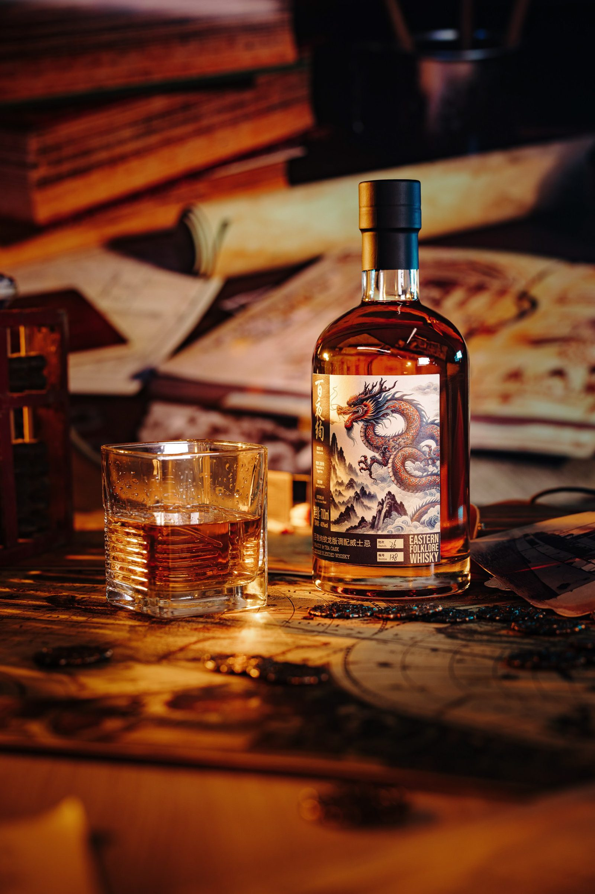
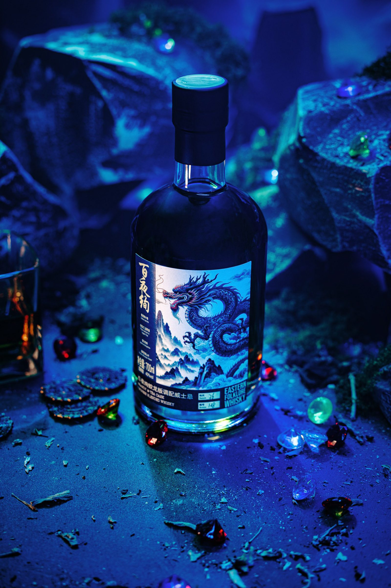
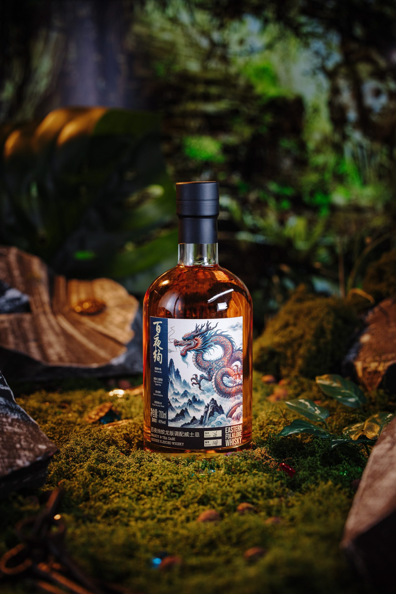
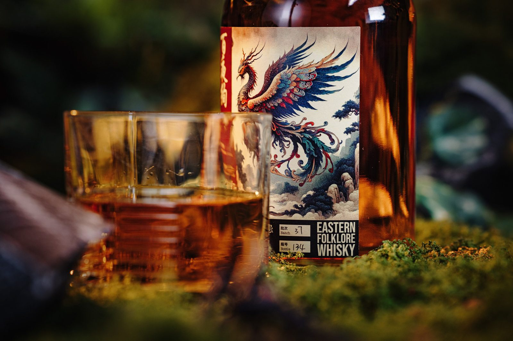
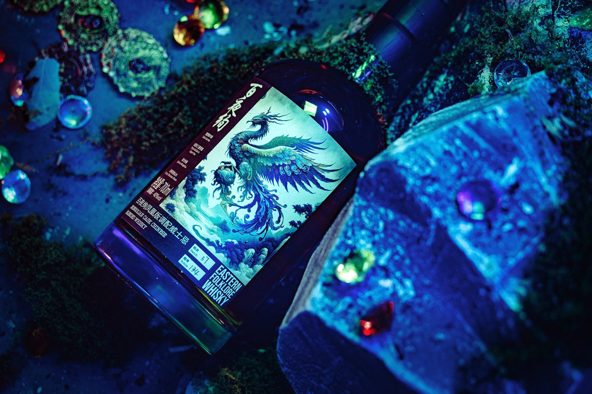
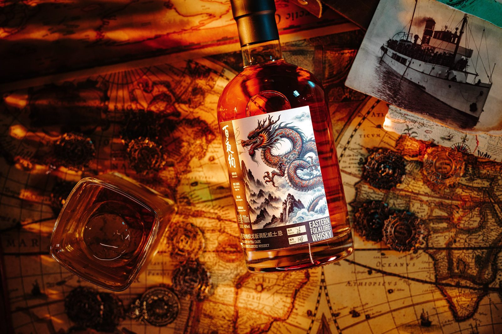

The brief
Eastern Folklore Whisky is a whisky brand launched in Shanghai. Its identity draws on the mythical Kunlun Mountain, a sacred realm in Chinese mythology described as the meeting point of heaven and earth and the home of deities and immortals.
The idea
Working closely with the photographer, we built each setting to bring that myth to life, blending the whisky's identity with surreal landscapes in a modern way.



Three worlds
The whisky is the start of an explorer's journey, its layered flavours unfolding across three worlds: a calm, moss-covered forest; a warmly lit explorer's desk of maps and collected objects; and a mysterious deep-sea landscape lit in blue.


